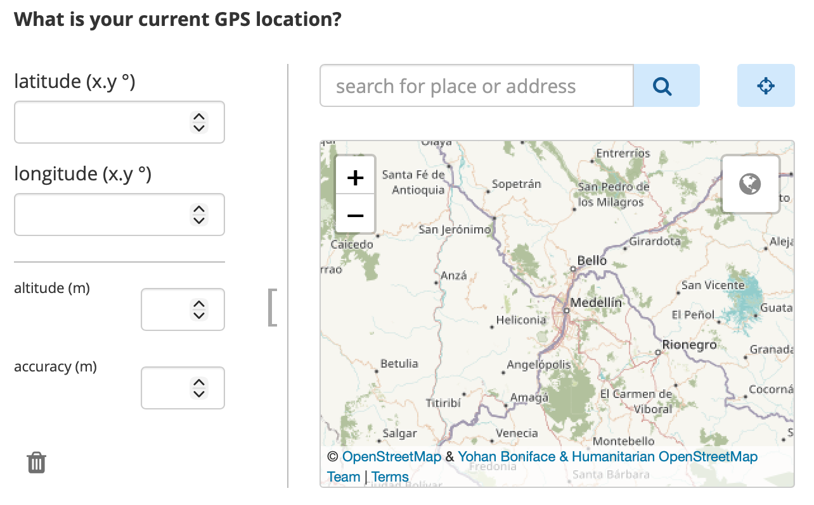

Search the knowledge base, browse our resources, and visit our forum for more detailed information
Last updated: 23 Apr 2026
KoboToolbox allows you to collect GPS data in your forms, including when working offline. GPS questions can capture a single location, a route, or an area during data collection. This is useful for tasks such as mapping infrastructure, tracking field visits, monitoring environmental sites, or recording service locations. GPS data can be collected using both web forms and KoboCollect.
This article explains how to collect GPS data in KoboToolbox, including the available GPS question types, how GPS data is collected in web forms and KoboCollect, how to use GPS data in advanced form logic, how to manage GPS data in KoboToolbox, and how to troubleshoot common GPS issues.
KoboToolbox supports three GPS question types for collecting geographic data directly in a form, several metadata options that collect location information automatically in the background, and map-based select questions in XLSForm.
GPS questions are visible to respondents. They allow respondents to collect GPS coordinates by manually selecting or automatically recording a single point, a line, or an area. The following GPS question types are available in KoboToolbox:
Formbuilder |
XLSForm |
Description |
|---|---|---|
Point |
|
Collects a single geographic location, such as the coordinates of a school, clinic, or household. |
Line |
|
Collects multiple GPS points that form a line, such as a path, road, or route. |
Area |
|
Collects multiple GPS points that form an enclosed area, such as a plot of land or a field. |
To learn more about adding GPS questions to your forms, see GPS questions in KoboToolbox and Question types in XLSForm.
GPS metadata questions are not visible to respondents. When enabled, they collect GPS data automatically in the background during form completion. The following metadata question types are available in KoboToolbox:
Formbuilder |
XLSForm |
Description |
|---|---|---|
audit |
|
Records detailed GPS location and other audit information during form completion, including location information for each question as the form is filled out. |
start geopoint early |
|
Automatically captures a single location in the background when the form opens. |
Not available |
|
Automatically captures a single location in the background after respondents answer a specific question. |
To learn more about adding GPS metadata to your forms, see Adding form metadata in the Formbuilder and Form metadata in XLSForm.
In addition to collecting GPS coordinates, you can also let respondents select from predefined locations on a map in XLSForm. This is set up using a select question with the map or quick map appearance, along with a geometry column in the choices sheet that stores the coordinates for each choice.
To learn more about setting up select from map questions, see Selecting options from a map.
GPS data can be collected in both web forms and the KoboCollect app, but the collection process differs between them.
When using web forms, respondents can enter GPS data in several ways:
Detect the current location of the device
Select a location directly on the map
Search for an address
Manually enter GPS coordinates
For line and area questions, respondents can add multiple points on the map to create a route or polygon.

Note: You can detect the current location of the device by clicking on the location target button in the top right corner, next to the search bar.
You can use appearances to change how the GPS question is displayed in web forms, specifically to hide the input fields for GPS coordinates. However, web forms do not allow you to fully prevent manual location selection. If you want to collect a location automatically without allowing manual selection, use background-geopoint instead.
In KoboCollect, GPS data is captured automatically from the device’s current location when the user taps a button. Manual location selection is not enabled by default for point questions, although additional appearances can change how GPS questions behave.
The capture method in KoboCollect differs depending on the question type:
Question type |
GPS data capture |
|---|---|
Point / |
Tap Get point to begin capturing the device’s location.
|
Line / |
Tap Get line and click to choose an input method. The available methods are:
|
Area / |
Tap Get polygon and click to choose an input method. The same input methods as above are available, but to create an enclosed area instead of a line. An area requires at least three points. |
Beyond the default behavior, you can use appearances to change how GPS questions function in KoboCollect. For example, you can use appearances to:
Display a map of the automatically selected location
Enable manual location selection
To learn more about GPS question appearances, see GPS questions in KoboToolbox.
You can also configure KoboCollect map settings to control how maps are displayed for GPS based questions, including defining the map source, selecting a map style, and adding offline map layers.
To learn more about KoboCollect map settings, see Customizing KoboCollect settings.
GPS accuracy depends on both the device and the environment. It can be affected by factors such as whether the device has GPS enabled and a built-in GPS sensor, how recently it last determined its location, whether it is using satellite or network-based location services, and environmental conditions such as cloud cover or nearby buildings and trees.
When building forms in XLSForm, you can use parameters to control GPS accuracy more precisely.
Common parameters include:
Parameter |
Example |
Description |
|---|---|---|
|
|
Automatically captures the point once the device reaches the target accuracy. If set to 0, the enumerator must explicitly accept the point. The default is 5 meters. |
|
|
Triggers a warning message if the GPS accuracy is not within the specified accuracy threshold. This does not prevent saving the point. The default is 100 meters. |
Note: For most workflows, a capture-accuracy of around 5 meters is a practical target. In general, it is not recommended to set the target below 3 meters unless you are using an external GPS device, because built-in device GPS is often not accurate enough to reach that level reliably.
To improve GPS accuracy:
Collect data outdoors in an open area with a clear view of the sky
Stand away from buildings, trees, and other obstructions
Make sure your body is not blocking the device’s view of the sky
Warm up your device’s GPS by including start-geopoint at the beginning of your form
Enable assisted GPS on the device if available
KoboToolbox supports advanced form logic with GPS data in XLSForm. For example, you can use GPS functions in calculations, constraints, and skip logic to measure distance, perimeter, or area, or to check whether a location falls within a defined boundary.

Common GPS functions include:
Function |
Description |
|---|---|
|
Returns the area, in square meters, of a |
|
Returns the distance, in meters, of either:
|
|
Returns |
To learn more about functions to manipulate GPS data in XLSForm, see Using functions in XLSForm.
After collection, GPS data can be reviewed, mapped, and exported in KoboToolbox.
GPS responses appear in the data table like other form responses. A single GPS point is stored as four space-separated values in this format: latitude longitude altitude accuracy.
For line and area questions, multiple GPS points are stored in the same format and separated by semicolons.
To learn more about viewing your data in the data table, see Viewing and validating your data.
KoboToolbox provides a built-in Map view for visualizing single GPS points. This makes it easier to review where submissions were collected, explore spatial patterns, and better understand the geographic distribution of your data.
To learn more about the Map view in KoboToolbox, see Mapping your GPS data.
You can also export GPS data from KoboToolbox for use in external software. Available export formats support different workflows, from data review and cleaning to mapping and geospatial analysis:
CSV and XLS exports are useful for working with GPS data in spreadsheet software and can also be imported into many GIS tools, though they often require additional setup such as defining coordinate fields or a coordinate reference system.
For GIS workflows, GeoJSON is generally the recommended format because it is widely supported in tools such as ArcGIS and QGIS.
KML is mainly intended for visualization in applications such as Google Earth and supports basic map styling, but it is more limited and is best used only when required for a specific workflow.
To learn more about exporting your GPS data for external analysis, see Exporting GPS data.
capture-accuracy threshold may be too strict for the device or field conditions.
Did you find what you were looking for? Was the information clear? Was anything missing?
Share your feedback to help us improve this article!